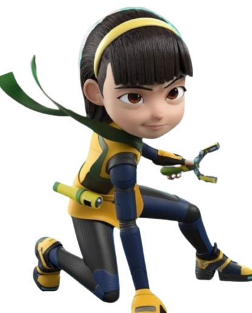
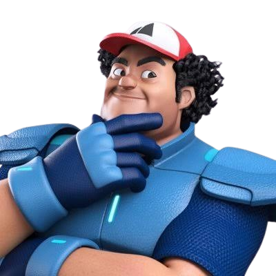
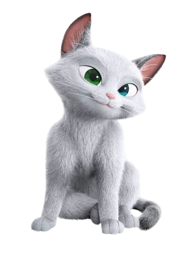

1. EJEN ALI
Ejen Ali is the main protagonist of the Ejen Ali series and one of the youngest agents recruited into the secret intelligence agency MATA. His journey begins when he accidentally activates the IRIS device, a highly advanced piece of technology that was originally intended for professional agents. Despite having no formal training at first, Ali proves himself through determination, intelligence, and quick decision-making under pressure. Throughout the series, he learns that being a great agent is not only about strength or advanced gadgets but also about responsibility, teamwork, and making the right choices. His courage and willingness to protect others make him an inspiring hero admired by many fans.
2. EJEN ALICIA
Alicia is one of MATA’s most talented and disciplined agents. She is well known for her exceptional combat skills, speed, and confidence during missions. Although she often appears serious and competitive, Alicia deeply values her teammates and always strives to complete every mission successfully. Her dedication to continuous training and self-improvement makes her one of the strongest young agents in the organization. She also serves as an inspiration to others by showing that hard work, discipline, and perseverance are the keys to becoming an excellent agent.
3. EJEN BAKAR
Ejen Bakar is Ali’s loyal and cheerful best friend who brings humor and positive energy to every mission. Even though he is not as experienced as some of the other agents, Bakar never hesitates to help his teammates whenever they need support. His optimism, bravery, and strong sense of friendship make him an important member of the team. Bakar demonstrates that every individual has unique strengths, and his kindness and willingness to work together contribute greatly to the success of many missions.
4. COMOT
Comot is Ali’s beloved pet cat and one of the most recognizable characters in the Ejen Ali series. Although Comot appears to be an ordinary cat, he is intelligent, playful, and always stays close to Ali during important moments. His curious personality often leads him into unexpected situations, but he also brings comfort and emotional support to Ali whenever he faces difficult challenges. Comot represents the importance of loyalty and companionship, reminding viewers that even the smallest friend can have a big impact. His adorable behavior and funny expressions make him a fan-favorite character while adding warmth and humor to the story.
5. EJEN RIZWAN
Ejen Rizwan is one of MATA’s most experienced and respected senior agents. He is known for his calm personality, exceptional leadership skills, and extensive experience in handling high-risk intelligence missions. As a mentor to the younger agents, Rizwan plays an important role in guiding them to become more disciplined, responsible, and confident in carrying out their duties. He believes that successful missions require careful planning, teamwork, and trust among all members of the organization. Despite his serious and professional attitude, Rizwan genuinely cares about the safety and development of every agent under his guidance. His wisdom, dedication, and commitment to protecting Cyberaya make him one of the most dependable and admired agents in MATA.



